For Plugin-Heavy Sites
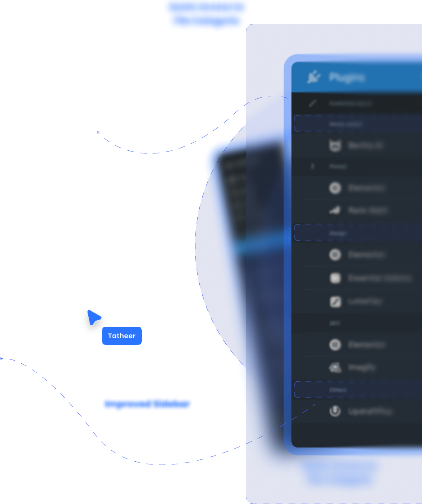
WordPress is the world's most widely used content management system, powering millions of websites across blogs, businesses, and large-scale platforms. Its flexible plugin ecosystem allows users to extend functionality easily, but this flexibility can also introduce usability challenges within the admin experience— especially for sites that rely on many plugins.
Plugin-heavy WordPress sites suffer from a cluttered wp-admin sidebar where plugins add inconsistent top-level menu items, making navigation hard to scan and time-consuming.
Improve navigation clarity and speed by reducing sidebar clutter while keeping the familiar WordPress admin experience intact.
Introduce a single Plugins hub with categorized plugin settings and a Pinned section for frequently used tools, without changing WordPress's visual style.
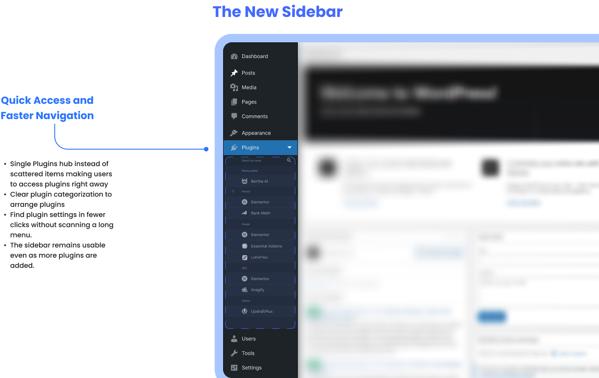
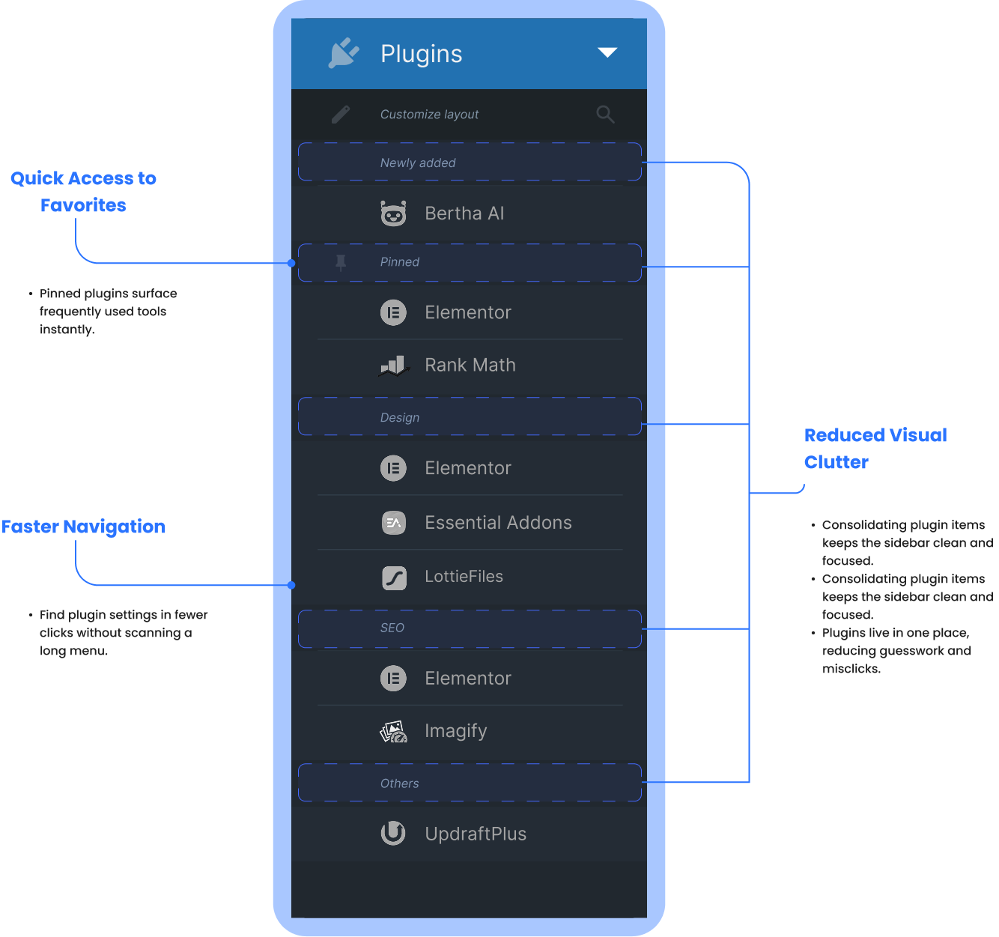
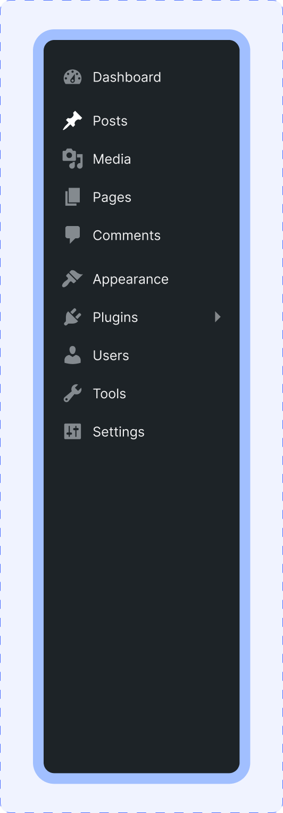
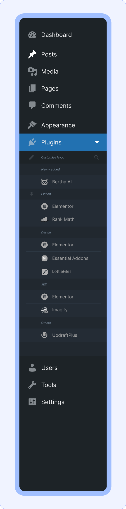
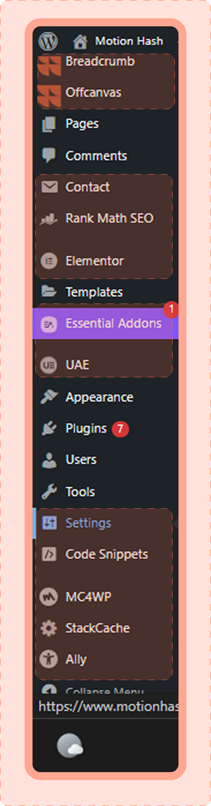
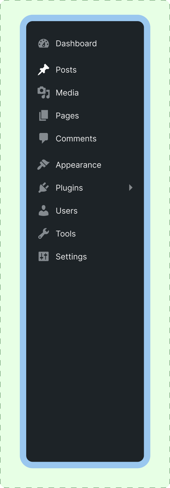
This redesign demonstrates how improving information architecture can make the WordPress admin sidebar easier to scan, faster to navigate, and more predictable for plugin-heavy sites. While this is a conceptual solution, it highlights clear ways to declutter, reduce friction, support power-user workflows, and scale better as plugins accumulate, setting a strong foundation for further testing and iteration.
WordPress allows plugins to add their own top-level menu items in the admin sidebar, which often results in long, inconsistent, and hard-to-scan navigation—especially on sites with many plugins installed. Over time, this clutter increases cognitive load, slows down common tasks, and causes users to hunt for settings or click the wrong items.
This matters because power users and designers spend hours inside wp-admin daily; even small inefficiencies compound into real productivity loss and frustration.
Constraints: Desktop only. Scope limited strictly to the left sidebar/navigation. The visual style and interaction patterns of WordPress were preserved to avoid breaking familiarity. This is a conceptual UX redesign with no plugin-level code changes.
My role: UX Designer - research, information architecture, interaction design, and usability validation.
In WordPress admin, plugins can freely add top-level sidebar menu items, leading to a long and inconsistent navigation structure. As more plugins are installed, the sidebar becomes harder to scan and predict. Users struggle to remember where plugin settings live and often misclick or waste time searching. The lack of structure reduces navigation clarity and overall efficiency for plugin-heavy sites.
Many WordPress and Reddit discussions highlight admin clutter as a pain point on plugin-heavy sites, especially for freelancers managing multiple projects. Plugins add random top-level menu items, resulting in inconsistent naming and placement across installs.
Power users rely heavily on muscle memory; shifting or bloated menus slow task completion.
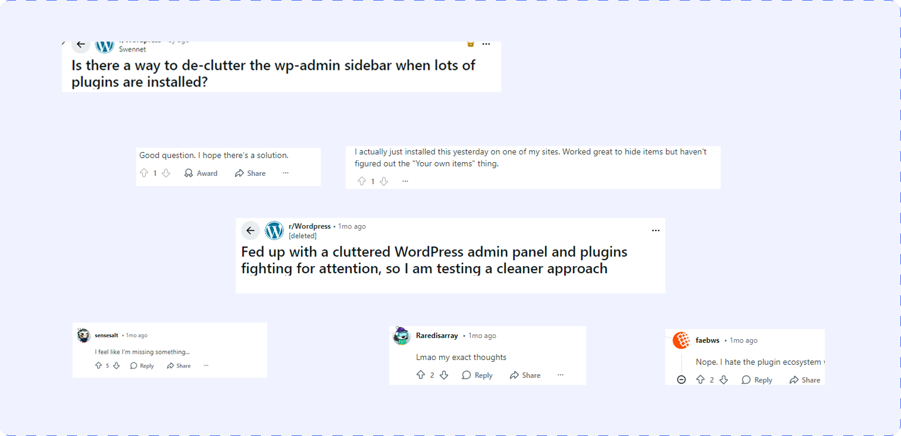
After completing desk research and noticing recurrent complaints about wp-admin sidebar clutter across Reddit and WordPress community discussions, I conducted five interviews with WordPress users collected from these spaces. While interviews were not initially planned, the consistency of feedback prompted me to validate assumptions directly with end users. The interviews reinforced the need for a more structured and predictable sidebar experience for plugin-heavy sites.
When managing a plugin-heavy WordPress site, I want to find plugin settings quickly so I can complete tasks without hunting through the sidebar.
When I frequently use certain plugins, I want faster access to them so I can avoid repeated scanning and misclicks.
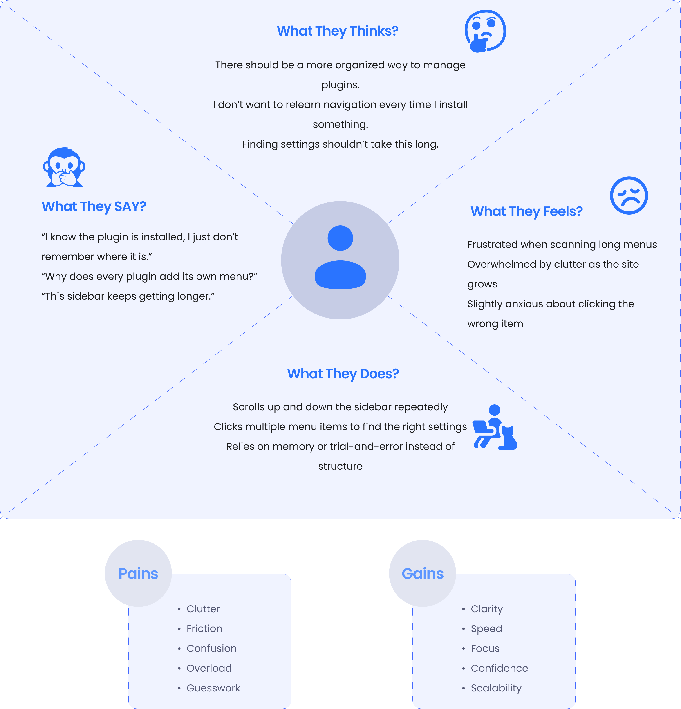
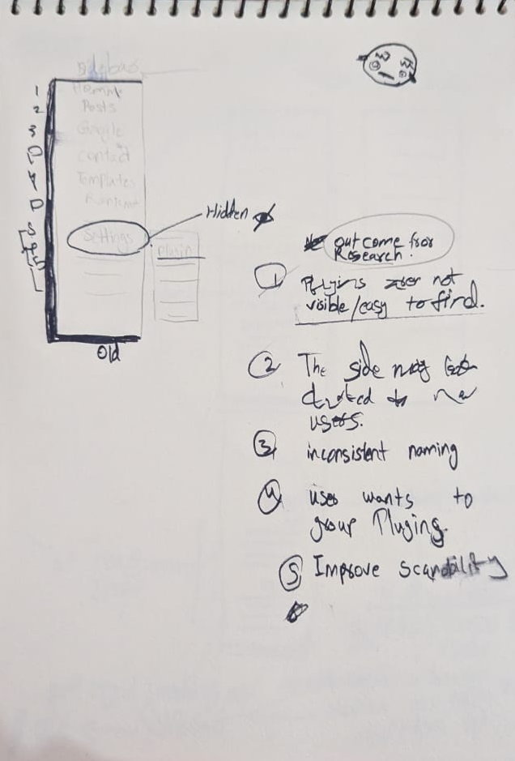
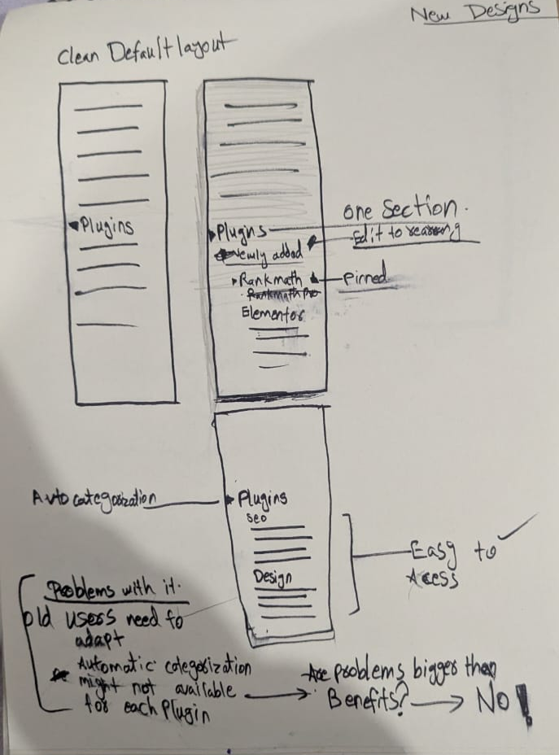
Clear and predictable navigation in the wp-admin sidebar
Faster access to frequently used plugin settings
Reduced cognitive load when scanning the menu
A structure that scales as more plugins are installed
Familiar WordPress experience without relearning
Based on desk research, Reddit discussions, and five user interviews, the solution focuses on improving navigation clarity rather than changing WordPress's visual design. All plugin-related menu items are consolidated into a single Plugins hub, reducing sidebar clutter and improving scannability. Plugins are grouped into logical categories, while frequently used tools can be pinned for quick access. This structure creates a more predictable, scalable sidebar that supports power-user workflows without breaking familiar WordPress admin patterns.
Ali builds and maintains WordPress sites for clients. He installs SEO, performance, security, and page builder plugins on almost every project and spends hours inside wp-admin daily. Speed and predictability matter more to him than customization.
I know what I need to open — I just don't remember where the plugin put it.
Sara updates content, manages plugins, and adjusts site settings when needed. She isn't deeply technical and often feels overwhelmed by the admin sidebar as the site grows and more plugins are added.
The sidebar feels messy — I just click until I find the right thing.
“Small tweaks, big impact—my experience just became smoother and better!”
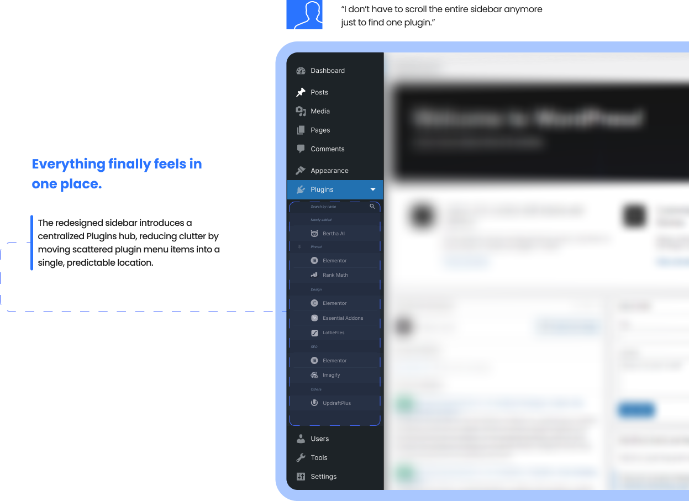
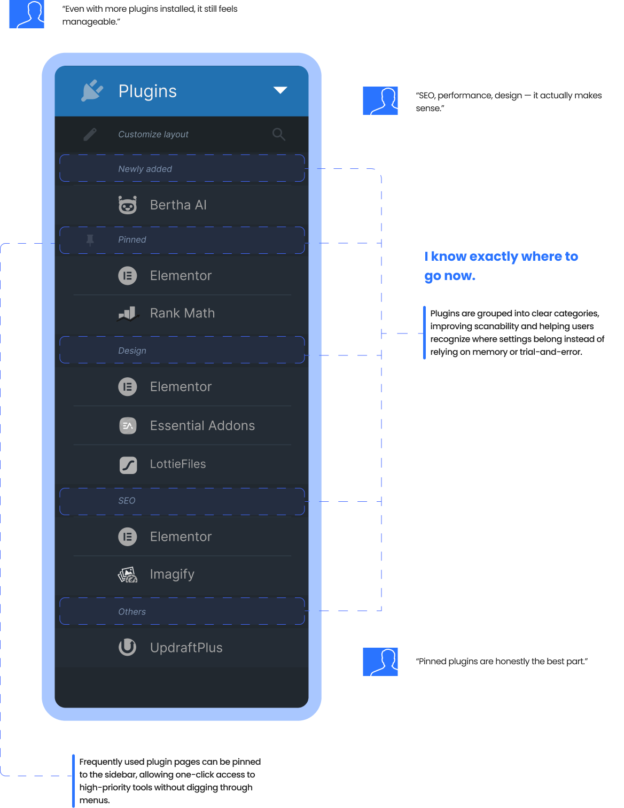
This case study reaffirmed how small information architecture changes can have a large impact on daily workflows, especially for power users. Instead of redesigning the entire interface, focusing on structure, predictability, and scale proved more effective. Working with real constraints, such as preserving WordPress's existing UI, helped shape a solution that feels realistic and implementable. If taken further, this concept would benefit from testing with a broader set of WordPress admins and validating plugin categories with real usage data.
The redesigned sidebar concept demonstrates a clearer and more scalable navigation model for plugin-heavy WordPress sites. By consolidating plugins into a single hub and introducing pinning, the solution reduces visual clutter and supports faster access to frequent tools. This project highlights the importance of prioritizing recognition over recall and designing systems that grow gracefully as complexity increases.
This project proved that improving information architecture, without changing visual design, can significantly improve usability. It strengthened my ability to work within existing systems, validate assumptions through research, and design solutions that scale with real-world complexity.